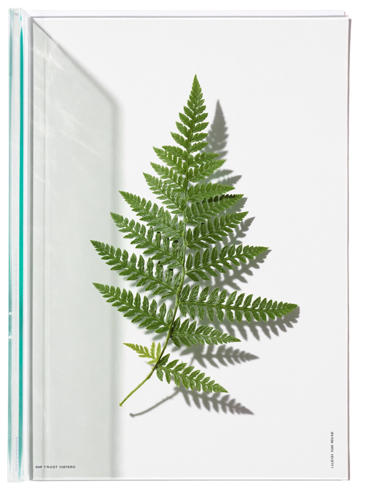
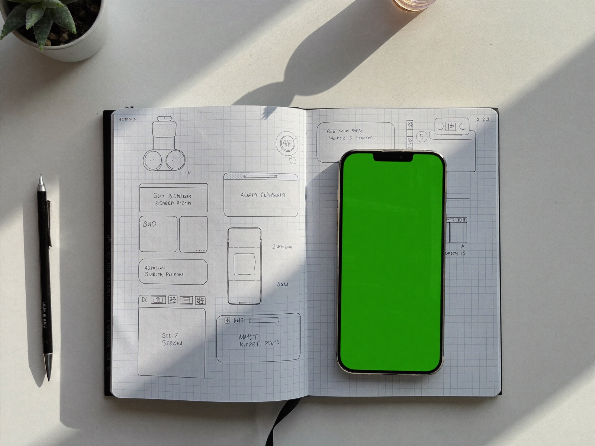

Hi, nice to meet you.
I'm working on the future of care.
I'm Summer Wright Collins: founder, consultant, executive, speaker, and writer. A technologist who understands people, blending science, sport, health, data, and design into my life's work.
Step inside
One collective, five practices. Come through whichever door brought you here.
The Practice Consulting for healthcare start-ups, providers, practices, and foundations. ↓ The Studio Developing products that solve real problems and help people and organizations be their best: CALLTIME and TailWag. ↓ The Stage Speaking engagements for audiences that want more than a slide deck. ↓ The Boardroom Executive and advisory counsel for boards and leaders building what's next. ↓ The Book Writing the story underneath it all: the book is underway. ↓I've spent my career where health meets invention: in the executive seat, at the consulting table, on stage, and at the workbench. I keep the doors between those rooms open on purpose. The best ideas I've ever found walked from one into another.
Summer Wright Collins, founder of The SWC Collective
About
I'm a trained epidemiologist with a designer's eye and a founder's urgency. For more than fifteen years I've worked across healthcare, member experience, and consumer digital products: leading innovation and strategy for one of the country's largest health plans, building the analytics backbone of a major pediatric health system, and turning messy data and real user behavior into decisions executives can act on.
Today the work spans five practices that feed each other. The consulting sharpens the ideas, the boardroom tests them, the studio ships them, the stage tells them, and the book is where the whole story is headed.
- Focus
- Health, wellness, and healthcare innovation
- Base
- Dallas, TX, working everywhere
- Education
- MPH in Epidemiology, Columbia; executive education in human-centered design, Stanford GSB; B.S., Northwestern
- Boards
- The Dallas Entrepreneur Center; Texas Women's Foundation, Economic Leadership Council
- Open to
- Consulting, keynotes, board seats, advising, and new ideas
- Reach me
- summer.wright@gmail.com and LinkedIn
Selected roles
The Practice
Organizations call me at inflection points: a new model of care, a new technology, a leadership chapter nobody has read before. The consulting is senior and hands-on, close to the real problem.
Who I work with
Healthcare start-ups
Positioning, product strategy, and the reality of building for care.
Providers & practices
Service design, growth, and technology that fits clinical life.
Foundations
Mission and capital, turned into programs that move outcomes.
Leaders
A thought partner for decisions that sit outside the org chart.
Ways in
The strategy sprint
A focused engagement around one hard question, measured in weeks.
Ongoing advisory
A standing seat at your table, measured in quarters.
The embedded chapter
Hands inside the work alongside your team, for the seasons that need it.

The Studio
The studio is where I build: products and tools that surface insight and let people and businesses operate at their highest level. Both came from watching a specific kind of business run harder than it should.
CALLTIME
"Talk like you play."
Communication training for student athletes navigating recruiting: coached practice for coach calls, messaging, and NIL conversations, so the real one is never the first time they've said it out loud.
Visit getcalltime.coTailWag
"You take care of the dogs. TailWag takes care of the parents."
AI-powered SMS for independent dog daycares: report cards texted home to pet parents, reminders that stop no-shows, and happy clients routed straight to the review page.
Visit usetailwag.coThe Stage
I speak about what I've lived, for audiences that want more than a slide deck.
-
Transformation and innovation in business
How organizations actually change, told from inside the rooms where it happened.
-
Health and wellness
What technology gets right, and wrong, about caring for people.
-
Student athletes and NIL
The new business of being a student athlete, from someone building for them.
-
Innovation in pet care
Where technology is taking the pet economy, from the front lines of building in it.
-
The personal journey
The story underneath the resume, told honestly.
Keynotes, panels, and fireside conversations. Send your date and audience, and we'll take it from there.
Prior speaking events include
The Boardroom
A smaller room, by design.
Board service
I take a limited number of board seats with organizations working in health, wellness, and care technology.
Executive advising
One-on-one counsel for leaders navigating growth, transformation, or a chapter they haven't read before.
How it starts: a conversation. If it fits, we set a cadence together.
The Book
It's underway. The story running beneath everything else on this page, and it isn't finished being lived.
Details when it's ready.Or bring me something new.
The best room in any collective is the one that hasn't been built yet. If you see work we should do together, write to me.
summer.wright@gmail.com